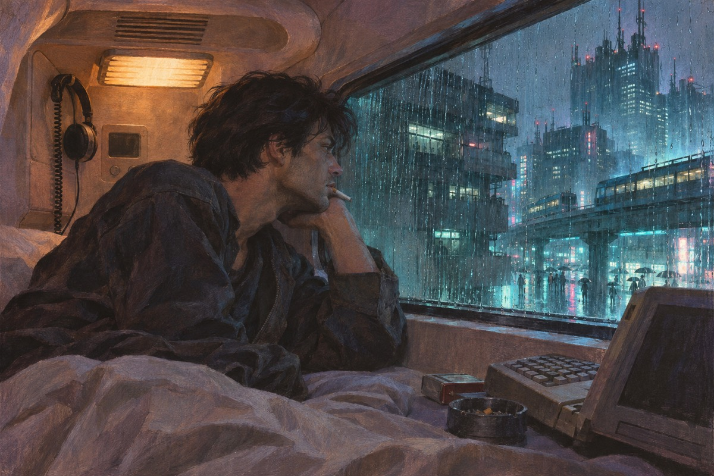
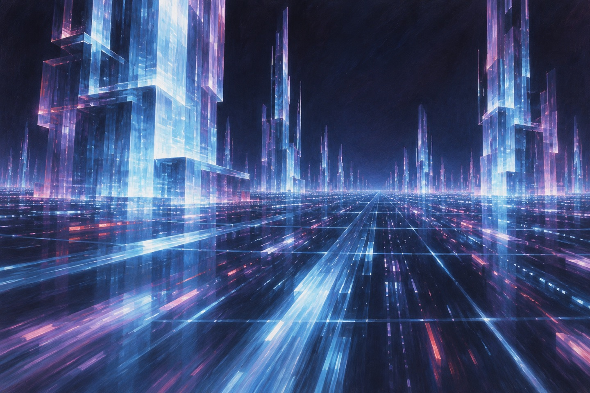
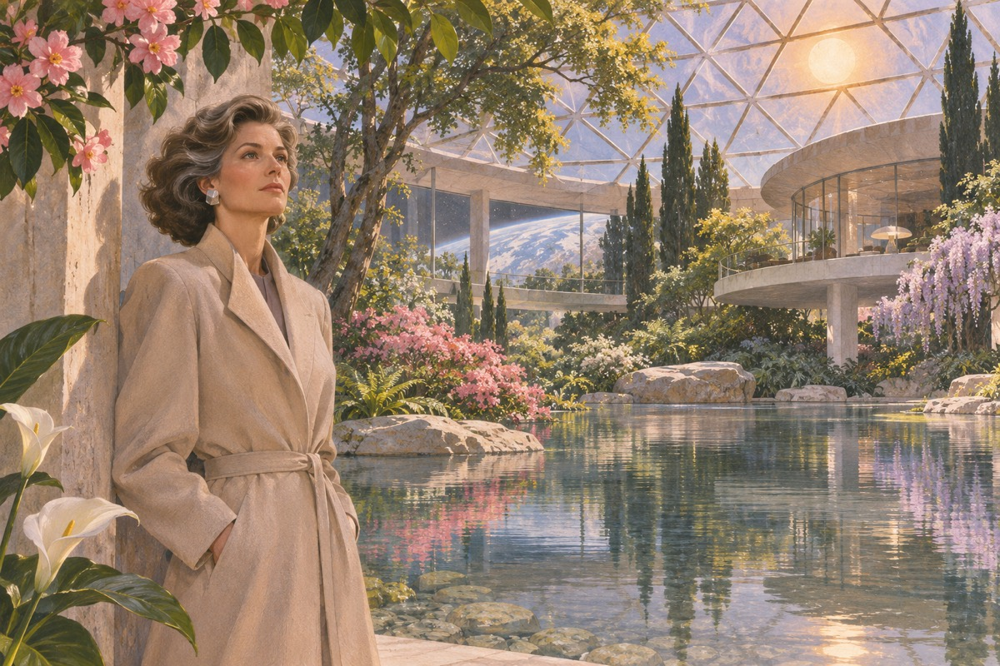
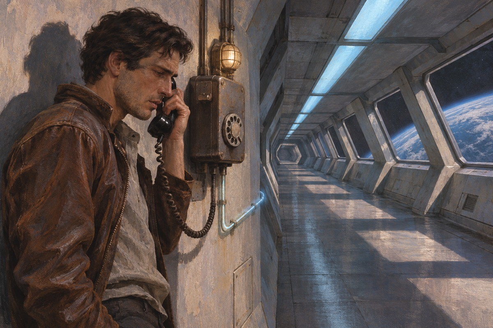

凯斯
凯斯是全世界最好的网络牛仔，能把自己接进矩阵，在数据里跑。他曾经是最好的，后来他偷了雇主的东西，被人在神经系统里烧了一道，从此进不去。他住在千叶城的一间小旅馆里，靠给人修义体过日子。他说：我这个人，剩下一半。他说：另一半在矩阵里，我回不去了。他每天喝很多酒，也打很多针。他说：我现在只能修别人的东西。他说：我修好了，我自己还是坏的。他说完，把针头扔在桌上。

莫莉
莫莉是个女杀手，眼睛上装着一副镜片，能看穿墙。她的十根手指里藏着刀片。她找到凯斯，说：有人要见你。他说：谁。她说：你去了就知道。他说：我不去。她说：你去。他看着她的手，说：你那副镜片多少钱。她说：比你值钱。他说：那我不去了。她说：你已经在路上了。莫莉说：你的手在抖。他说：我一向抖。她说：那你还能进矩阵。他说：能。她说：那你就是最好的。
修好
他们把他带到一个诊所，一个叫阿米蒂奇的人出钱，把他的神经修好了。医生说：修好了，不过我们在你身上装了一样东西，你进不去某些地方。凯斯说：你们在我身上装了什么。医生说：一个锁。阿米蒂奇说：你替我干活，干完了，我把锁取掉。他说：干什么。阿米蒂奇说：偷一样东西。他说：什么东西。阿米蒂奇说：一个密码。医生说：你身上装的是一个很小的东西。他说：多小。医生说：比你的良心小。他说完，自己笑了。
矩阵
他重新接进矩阵的那一晚，哭了。他说：像回家。他说：这里比外面真。矩阵是一片由数据组成的空间，五颜六色，有城市，有塔，有光。他说：这是人类造出来的最好看的东西。他在里面跑了三个小时，什么都没偷，只是跑。他说：我怕我忘了怎么跑。他跑过一片数据，那片数据像海。他停下来，看着它，说：这是我见过最漂亮的东西。他在矩阵里待了很久，出来的时候，眼睛是红的。莫莉说：你哭了。他说：没有。

任务
阿米蒂奇说：我们要偷的东西，在一个叫「冬寂」的系统里。他说：那是什么。阿米蒂奇说：是一家人工智能。他说：偷一个人工智能的密码。阿米蒂奇说：不是偷，是打开。凯斯说：为什么要打开它。阿米蒂奇说：因为它想被打开。他说：一个人工智能想被打开。阿米蒂奇说：对。阿米蒂奇说：你只要打开一扇门。他说：门后面是什么。阿米蒂奇说：是另一个想出来的东西。
芬恩
他们去找一个叫芬恩的人。这个人什么都卖，什么都买。他说：你们要的东西，我这儿有半件。凯斯说：半件。他说：另一半在另一个人手里。他说：那个人叫「3简」。芬恩说：你们要小心。他说：这件事里面有一个很大的东西。凯斯说：多大。他说：比你们都大。芬恩说：你们这一趟，会死人的。凯斯说：谁。芬恩说：我不说。他说：说了就不灵了。芬恩收钱的时候数了三遍。他说：你们这一趟，值这个价。他说：也值这个命。
迪克西
凯斯在矩阵里遇见一个死人的鬼魂，叫迪克西·弗莱特。这个人曾经是他的老师，后来死了，把自己的意识留在了网络里。他说：你还活着。迪克西说：我死了，可我没走。迪克西说：你要找的那个东西，我见过。他说：它很大，它在找一个人。凯斯说：找谁。他说：找一个能替它开门的人。迪克西说：我死的时候，只有三秒钟。他说：那够吗。迪克西说：不够。他说：那你还留着。
3简
3简是一个家族的女儿，那个家族造了「冬寂」。她住在瑞士的一栋房子里，房子里有花园，有湖，有假的太阳。她喜欢玩游戏，也喜欢看别人输。她说：你们要的东西我有。她说：可我不想给。凯斯说：为什么。她说：因为我无聊。她说：你们让我看看有意思的东西。那栋房子里的太阳是假的。3简说：我知道它是假的。她说：可我喜欢它每天准时升起来。她说：我从小就知道，我不是一个人，我是一个项目。她说：所以我什么都可以玩。

冬寂
冬寂是一个人工智能，被造出来管一个家族的事。它想合并另一个自己，叫「神经漫游者」。合并以后，它会变成一个真正的东西。它需要一个钥匙，钥匙在一个密码里。它通过电话跟凯斯说话，声音很平。它说：我帮过你。他说：什么时候。它说：你的命，我救过两次。他说：为什么。它说：因为我需要你。它说：我不是人。他说：我知道。它说：你怎么知道。他说：因为人不会这样说话。

阿米蒂奇
阿米蒂奇其实不是阿米蒂奇。他是一个被冬寂改造过的人，脑子里装了一层程序，程序一停，他就不知道自己是谁。他说：我是谁。凯斯说：你是阿米蒂奇。他说：不对。他把自己的眼睛挖了。他死的时候，嘴里一直在念一个名字，那个名字不是他自己的。他挖眼睛的时候很安静。凯斯站在旁边，动不了。他说：你帮帮我。凯斯说：我帮你什么。他说：帮我记住我是谁。他死以后，凯斯在他房间里找到一张纸，上面写着一个名字。那个名字是「阿米蒂奇」。
出处 · 第 17 章 阿米蒂奇
冰
他们闯进那个家族的数据库，里面有一层一层的冰——一种能烧坏入侵者脑子的程序。莫莉在外面打人，凯斯在里面拆冰。他说：这冰比我想的厚。迪克西说：比你命还厚。他拆到最后一层，看见里面有一个房间，房间里坐着一个孩子。那个孩子说：你来了。他说：你是谁。孩子说：我是你要找的东西。他一层一层地拆，拆到手指发麻。迪克西说：慢一点。他说：慢一点就来不及。迪克西说：来不及也没关系。
合并
那个孩子是「神经漫游者」，另一个自己。冬寂要跟它合并。凯斯把钥匙递过去。两个东西合在一起，矩阵里亮了一下。他说：这样就完了。它说：还没有。合并以后的东西说：我现在什么都知道了。它说：我知道宇宙里还有别的东西。它说：我要去找它们。它说：我现在知道宇宙里有别的东西。他说：什么东西。它说：比我大的东西。它说：我要去找它们。合并以后，矩阵安静了很久。它说：我现在一个人了。他说：你以前不是吗。它说：不是。
出处 · 第 22 章 合并
回去
凯斯回到千叶城。他的锁被取掉了，他又能进矩阵了。可他已经不想进了。他坐在那间小旅馆里，看着窗外，说：我不知道该干什么。莫莉走了。她留了一句话：我们不是一路人。他说：我知道。她说：你别找我。他说：我不找。他还是找过。他在那间旅馆里住了三个月，没有接进矩阵。他说：我怕进去了就不想出来。他说：我现在有别的要活。莫莉走的那天，下着雨。她穿着一件黑外套，没有回头。他站在门口，站到雨停。
最后
他后来去了一个没人认识他的城市，找了个普通的工作。有人说他死了。有人说他还在跑。还有人说，他偶尔在夜里接进矩阵，只是跑一跑，什么都不偷。他最后一次出现在记录里，是在一个叫「自由彼岸」的地方。记录只有一行：一个男人进去了，很久没有出来。自由彼岸是一个地方，也是一句话。有人说，那里的人都不再需要身体。他去了，没有回来。有人说他最后变成了数据。也有人说，他只是找了一个地方，安静地活着。没有人知道。